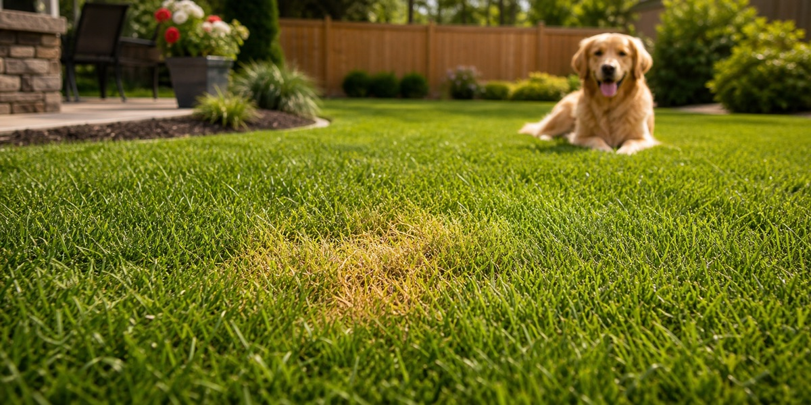
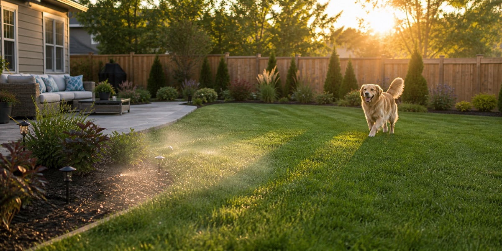
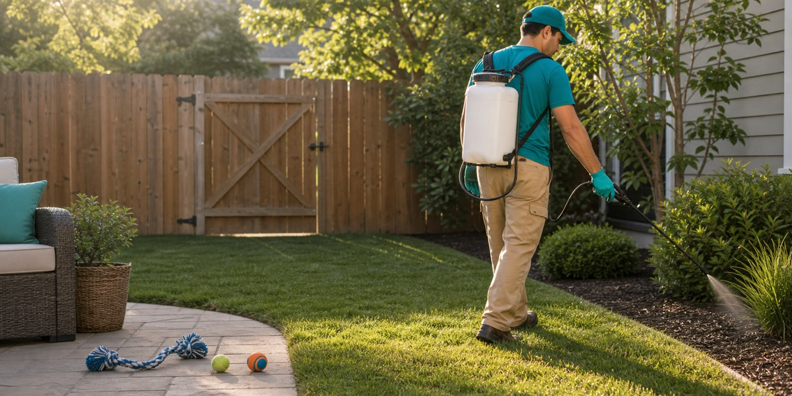
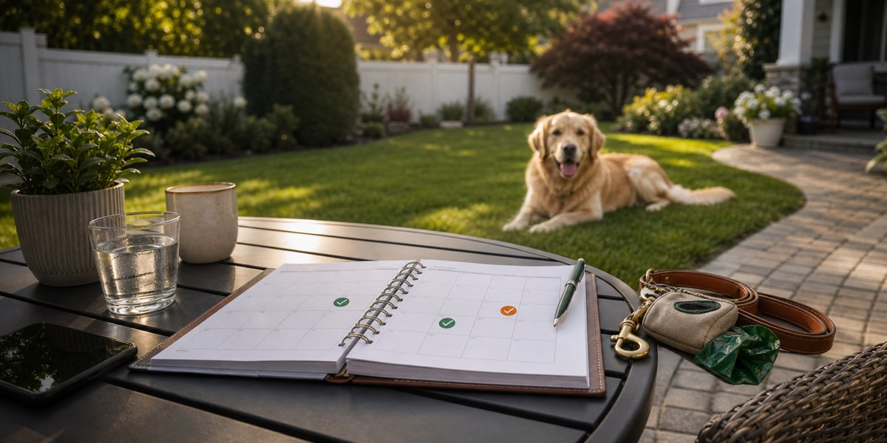
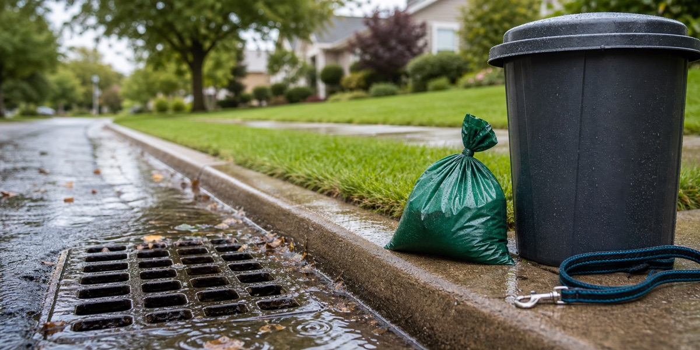
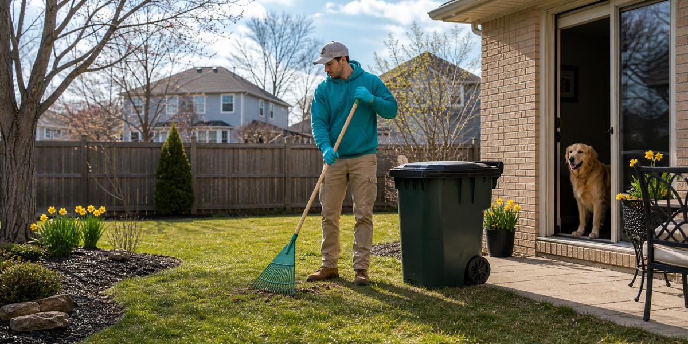

Neutralizing + lawn burnDog Urine Spots on the Lawn: What Causes Lawn Burn?
A practical guide to dog pee killing grass, neutralizing treatments, and what homeowners mean by lawn burn restoration.
Scooper Heroes resources
Practical, expert-backed articles about dog waste removal, pet-safe lawn treatments, odor control, and healthier outdoor routines across Northwest Indiana and the Chicago South Suburbs.
Latest articles
These guides target the real questions dog owners ask: how often to book pooper scooper service, why dog urine spots happen, how to fight yard odor, and why sanitizing after cleanup matters.

Neutralizing + lawn burnA practical guide to dog pee killing grass, neutralizing treatments, and what homeowners mean by lawn burn restoration.

DeodorizingWhy cleanup plus deodorizing beats covering up odors after dog waste has been sitting in grass, mulch, or high-use areas.

SanitizingCDC-backed reasons cleanups should go beyond appearance, especially where kids, dogs, and bare feet use the same lawn.

Service frequencyWeekly, biweekly, monthly, and one-time cleanup guidance for homes with one dog, multiple dogs, and busy backyard routines.

Rain + runoffWhat happens when pet waste sits through rain, why stormwater matters, and why routine pickup is better than waiting.

Seasonal cleanupWhy spring is the best time to reset the yard after snowmelt, wet grass, and hidden winter accumulation.